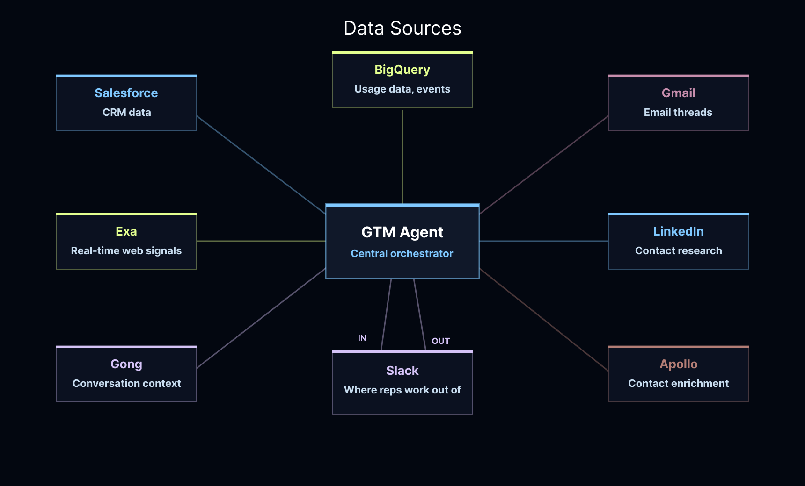
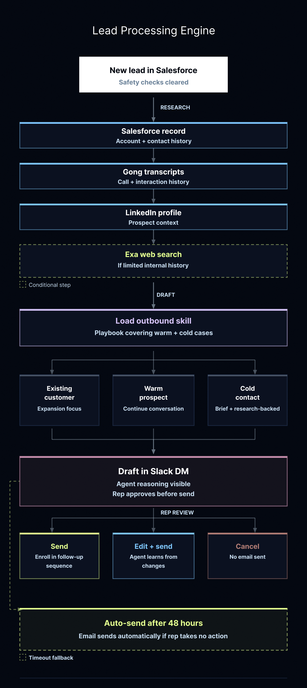
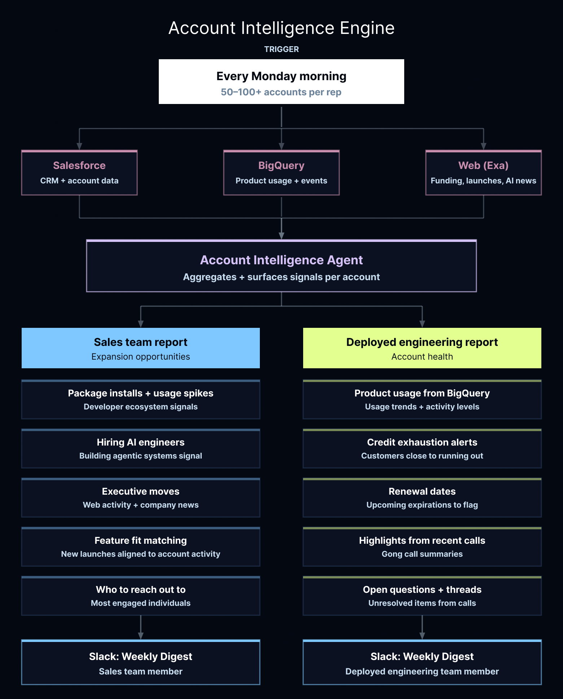
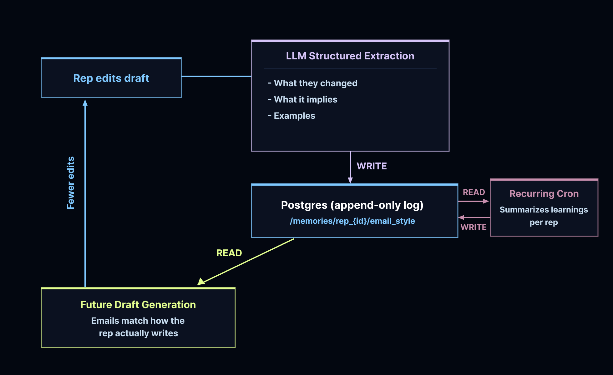
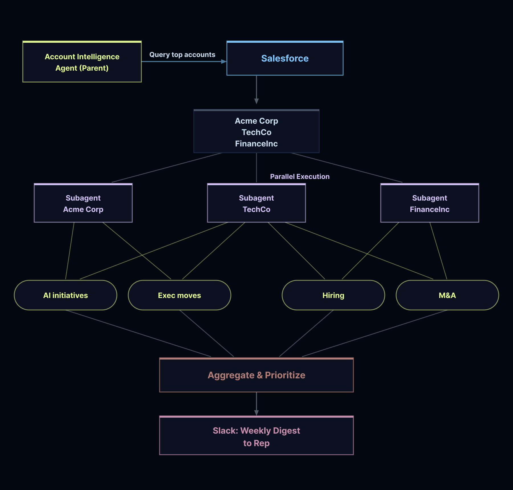

原文：How We Built LangChain's GTM Agent 来源：LangChain Blog | 2026-05-09 作者：Vishnu Suresh & Jess Ou
· · ·
· · ·
LangChain 的每次外呼过去都是这样开始的：销售代表在多个标签页之间切换——Salesforce 看账户记录、Gong 看通话历史、LinkedIn 看联系人、公司网站看背景。写第一个字之前要花 15 分钟做调研，而且没有简单方法知道队友是否昨天已经联系过。
他们构建了一个 GTM agent，端到端运行整个流程：在新 Salesforce lead 出现时触发，检查是否应该联系，收集上下文（包括会议历史），然后发送 Slack 草稿（附带推理和来源）供代表审批。

图：GTM Agent 整体架构
关键成果：
· · ·
在写任何代码之前，团队定义了 agent 实际需要做什么。
不可妥协的要求：
核心能力：
度量：每个代表动作（发送、编辑、取消）都记录到 LangSmith 并附加到底层 trace，用于评估质量、捕获退化、量化什么在起作用。
· · ·
GTM agent 做两件事：(1) 研究 lead 并写个性化邮件草稿；(2) 聚合账户级信号，展示代表应该关注哪里。

图：Lead 处理引擎
新 lead 出现在 Salesforce 时，agent 立即接管。它首先寻找不发送的理由——如果有人刚提了支持工单，或队友本周已经联系过，发送自动邮件就是错误。Agent 被编程为谨慎。
通过检查后，它做代表过去手动做的调研：拉取完整 Salesforce 记录、阅读 Gong 转录、检查 LinkedIn。如果内部历史不多，它用 Exa 去网上了解公司当前在 AI 方面做什么。
邮件草稿的写法取决于关系状态。Agent 遵循定义好的 outbound skill——一个在起草前加载的 playbook。现有客户、温暖潜客和冷联系人各得到不同内容。
代表在 Slack DM 中看到完成的草稿，带有发送、编辑或取消按钮，还能看到 agent 的推理过程。
团队后来加了 48 小时 SLA：如果代表在窗口内没有批准或拒绝草稿，它自动发送。这显著提高了对否则会无回复滑过的 lead 的跟进率。

图：账户智能引擎
代表各自拥有 50 到 100+ 个账户。在这个量级，事情容易变安静，扩展机会容易滑过。
每周一早上，agent 从 Salesforce 和 BigQuery 拉数据，然后检查外部世界的融资轮次、产品发布和新 AI 计划。报告为两个受众定制：
· · ·

图：记忆循环
当代表在 Slack 中编辑草稿时，系统比较原始版本和修改版本。如果变更是实质性的，LLM 分析 diff 并提取结构化风格观察：什么变了、暗示代表什么偏好、可选的引用示例。这些观察存储在 PostgreSQL 中，按代表键控，每次未来运行在起草前读取它们。
反馈循环是自动的。每次编辑教会 agent，下一份草稿反映它。 每周 cron 压缩这些记忆以防膨胀。

图：账户智能 subagent 架构
账户智能通过编译的 subagent 运行：轻量 agent，有约束的工具集和结构化输出 schema，作为与主 agent 的契约。
父 agent 为每个账户生成一个 subagent，保持工具隔离和输出可预测。因为 subagent 独立运行，可以并行执行。LangSmith Deployment 处理水平扩展和持久执行。
· · ·
在为新工作流写任何生产代码之前，团队在 LangSmith 中定义成功的样子。
从一小组代表性场景开始，基于代表实际面对的情况。功能就绪后，扩展评估集覆盖更难的情况：深入 agentic AI 的研究者、试图重新激活的现有客户、有 Gong 转录的账户、医疗等重术语垂直领域。
两层评估：
1. 基于规则的断言检查基础：正确的工具、正确的顺序、没有重复草稿 2. LLM judge 评分语气、字数和格式
两者都作为 CI 中完整 eval 套件的一部分运行。任何无法解释的 agent 行为漂移都被视为值得调查的 bug。
但 eval 只讲了部分故事。真正重要的是代表日常如何使用草稿。团队跟踪每个 Slack 动作并直接附加到 LangSmith 中的 trace。随时间推移，这让他们能关联写作模式与真实结果：哪些风格驱动打开率，哪些主题行获得回复。当某些东西在足够多代表中成立时，就编码进 agent 的默认行为。
· · ·
1. 从成功定义开始，不是代码。 在写生产代码前定义好什么是好的，围绕它构建场景库。到发布时，你有一个能捕获退化、标记漂移、在 CI 中自动运行的 eval 测试套件。
2. 人在回路不只是安全机制。 它是数据收集机制。每个代表动作（发送、编辑、取消）都成为可学习的信号。记忆系统和反馈循环之所以有效，是因为代表在流程中。
3. 从一开始就连接系统记录。 跨公司的有机采用之所以发生，是因为 agent 已经有了人们需要的数据访问权限。工程师和客户成功团队的使用是自然扩散的。
4. 长时间运行的工作流需要正确的基础设施。 这个 agent 需要从多个源拉取、跨源推理、并行运行 subagent、跨轮次维护状态。选择为这种编排构建的 agent harness（Deep Agents）省去了从头重建基础设施的工作。